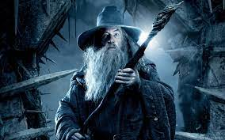

Gandalf o Cinzento

Gandalf é um Mago Istari, pertencente à raça dos Maiar, espírito angelical do mundo
tolkienano, e costumava andar com Nienna com quem aprendeu a paciência e a compaixão (Silmarillion), mas
diz-se que era conselheiro de Irmo Lórien. Foi à Terra-média, incorporado um velho, para ser um dos
conselheiros dos homens e impedir que a escuridão voltasse.[1]